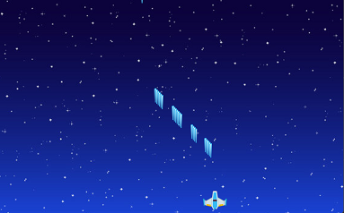

- 請確認依照單元一安裝 Godot 相關套件
- 點選Godot win64執行檔開啟Godot
- 點選新增專案，設定專案名稱並將專案路徑設定為專案檔案夾(如project1)位置，點選建立並編輯
- 選擇 2D場景並點選 專案選單-專案設定，選擇 啟動畫面 設定背景顏色，選擇 視窗 捨定視窗大小。更改節點名稱為 World
- 點選 專案選單-專案設定，選擇 啟動畫面 設定背景顏色，選擇 視窗 捨定視窗大小。
- 選擇 專案-工具-C#-Create C# solution，場景視窗下方會出現 MSBuild，點選 MSBuild，並在對應視窗中選擇 Build-Rebuild Solution
簡單射擊遊戲內容包含：背景圖片設定、腳色設定、動作控制及碰撞偵測，課程將依照上述順序進行說明。
Godot遊戲由場景所組成，遊戲可以包含一個場景或由許多場景組成，場景為一樹狀架構，包含一個根結點，其他遊戲物件(節點、Node)為根節點的後裔，Godot最少包含一個主場景，遊戲的各個部份(玩家、敵人)也可設為場景，之後再動態載入，首先請點選 場景視窗左邊2D場景建立 Node2D節點後，將節點名稱改為 World。
精靈2D(Sprite2D)節點可用於設定2D材質，下載 背景圖 並置於專案目錄 assets中，請自行新增 assets 目錄，在World節點下新增Sprite2D節點，重新命名為background，並設定精靈2D(Sprite2D)節點材質(Texture)為背景圖，修改視窗大小為1280 x 800，修改精靈2D(Sprite2D)節點大小，讓它覆蓋整個視窗。
{kind=link}
下載 玩家 並置於專案目錄 assets中，請自行新增 assets 目錄，在World節點下新增Sprite2D節點，重新命名為player，並設定精靈2D(Sprite2D)節點材質(Texture)為玩家圖，修改玩家大小為原來大小0.4，並置於視窗下方中央。
{kind=link}
點選player節點加入C#控制語言後按建立，專案會在專案目錄下產生player.cs檔案，檔案內容如下：
請使用VSCode程式開啟專案目錄後，開啟player.cs檔案，Godot在C#使用 Input.IsKeyPressed(Key.鍵值)偵測使用者是否按下該鍵值，我們將在_Process方法搭配GD.Print方法印出使用者按下鍵值。玩家節點位置物件(Position)為一Vector2物件，可以透過改變Position物件值來改變玩家位置。
本單元將設計新場景Laserplayer，並在player.cs程式中動態載入，當玩家按下空白鍵時發射子彈。
請點選<2D場景視窗
並按下+新增場景，下載 玩家子彈 並置於專案目錄 assets中，在新場景根節點新增精靈2D(Sprite2D)節點，重新命名為Laserplayer，並設定材質為laserplayer.png，之後對Laserplayer節點新增C#控制程式Laserplayer.cs，在Laserplayer.cs設定子彈速度屬性speed，並在_Process方法改變子彈Y軸位置。{kind=link}
在player.cs動態載入載入場景需要兩個步驟
- 使用GD.Load%lt;PackedScene>("外部場景檔案.tscn")載入外部場景，同時需設定儲存PackedScene屬性
- 使用儲存PackedScene屬性.Instatiate()方法來產生場景物件，請注意：場景物件類型為場景類別名稱或是場景根節點類型
- 在player物件，使用GetParent().AddChild()方法加入新場景節點
完成上一單元練習後，會發現有多個子彈發射的問題(如下圖)，原因是因為玩家一直按住空間棒的原因，要解決這個問題，我們將透過Timer節點，並搭配布林變數，讓玩家在設定時間內，只能發射1顆子彈。

請在player節點下加入Timer節點，並在player.cs中設定三個變數布林值 CanFire、浮點數 AttackSpeed、Timer timer變數，接下來在player.cs中_ready函數加入下列程式
在_Process函數設定當射擊變數CanFire為true時，將射擊變數CanFire設為false，並利用timer變數.Start()函數開始計時，之後加入子彈，因為射擊變數CanFire現在為false，既使玩家持續按空白鍵，還是部會發射，在時間結束執行程式中要將射擊變數CanFire設為false。
VisibleOnScreenNotifier2D節點用於偵測節點是否在或離開螢幕範圍，透過IsOnScreen()函數傳回布林值(true/false)表示是否在螢幕內，或是透過ScreenExited事件設定當離開螢幕時要執行的動作，事件設定方式同Timer節點。
AudioStreamPlayer2D節點播放2D音樂，可透過Playing屬性檢查檔案是否還在撥放，利用Play()方法撥放音樂。
請下載子彈發射音樂檔並在player節點加入AudioStreamPlayer2D並設定音樂檔後，製作如下練習
CharacterBody2D節點透過程式控制，同時適用於不須進階物理性質並包含移動碰撞偵測等功能。CharacterBody2D將包含Sprite2D與CollisionShape2D節點，Sprite2D用於設定腳色材質(Texture)，CollisionShape2D透過碰撞區域(Collision Shape)設定碰撞。
請下載玩家圖片並放入專案目錄後，製作如下練習
{kind=link}